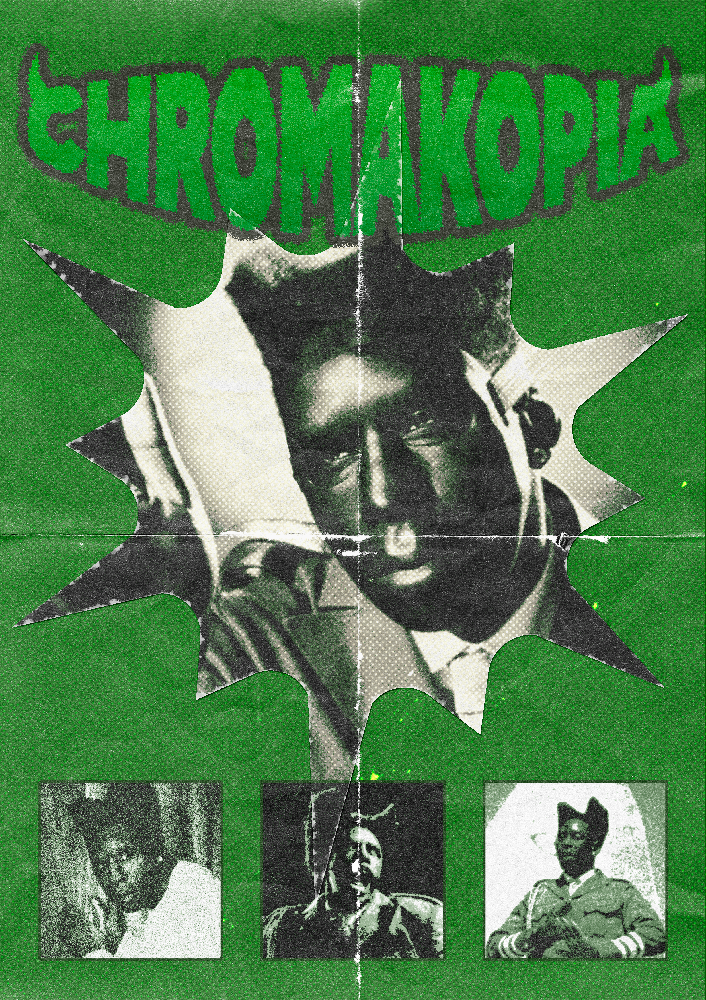
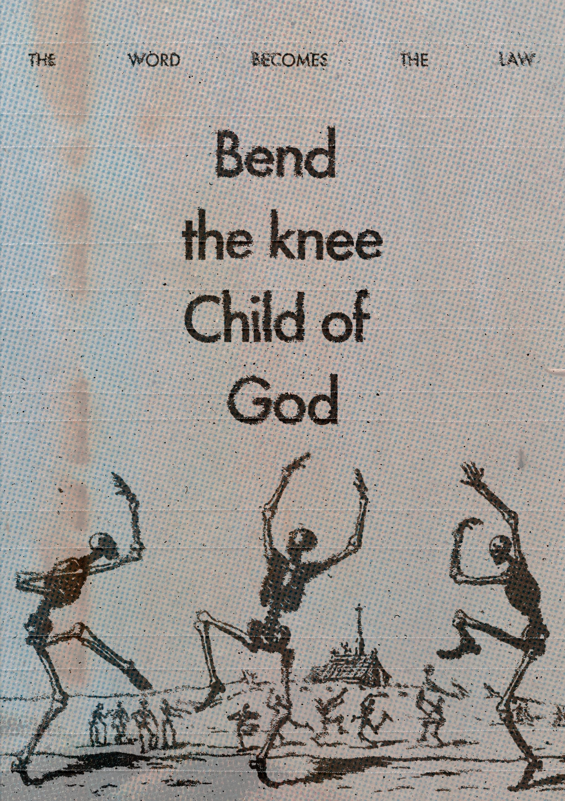

Projetos pessoais, experimentos e trabalhos autorais.Arte sem briefing.

Chromakopia
Pôster · Pessoal
God Save The Queen
God Save The Queen v2
Divine Female

Bend The Knee
Support Your Local Planet
Caos
Nikes On My Feet